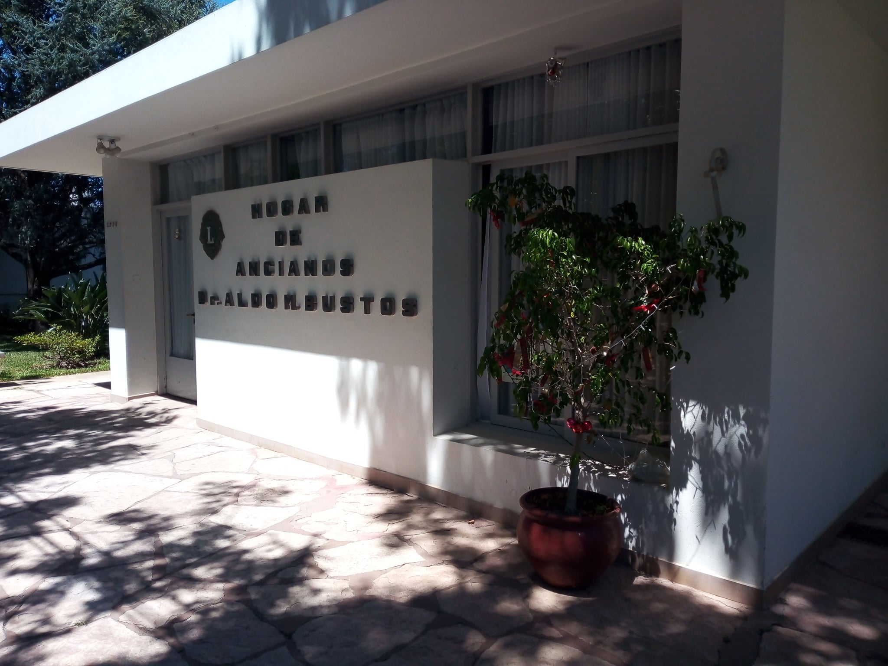

Nuestros adultos mayores merecen lo mejor.
¿QUIENES SOMOS?
Nuestra Institución, inaugurada el 29 de abril de 1972, recibe el nombre de Hogar de Ancianos León Dr. Aldo M. Bustos y se encuentra ubicada en calle Janssen 2550 de la ciudad de Esperanza. Fue creada específicamente para brindar estadía permanente a los adultos mayores alojados en el Hogar, siendo el bienestar y calidad de vida nuestro objetivo principal. Contamos con las correspondientes habilitaciones como HOLEPAM (Hogar de larga estadía para adultos mayores) tanto a nivel provincial como municipal. Ofrecemos nuestros servicios apoyados en un equipo multidisciplinario compuesto por médico, enfermeras, trabajadora social, nutricionista, profesora de educación física, terapista ocupacional, psicóloga, pedicuría, peluquería y personal de planta que se ocupa de la atención de nuestros residentes con compromiso, ética, responsabilidad y excelencia. El Hogar León Dr Aldo M. Bustos es una Organización No Gubernamental (ONG) sin fines de lucro cuyo funcionamiento en dirigido por una Comisión Administradora cuyos cargos se renuevan periódicamente según lo establecido por el estatuto vigente y desarrollando su función en forma totalmente Ad Honorem.
HISTORIA
A mediados de la década de 1960 se notaba en Esperanza y la región la falta de alguna Institución que alojara a los adultos mayores brindándoles la contención necesaria. Fue así que el Club de Leones de Esperanza tomo la propuesta de su asociado y director del Hospital Vecinal (hoy SAMCo); el Dr. Aldo Marcelo Bustos en el sentido de construir un lugar que cubriera la mencionada falencia. Entonces, en el año de 1968 se tomó la decisión de construir el Hogar en su actual emplazamiento de calle Janssen al 2500 en un terreno donado al Arzobispado de Santa Fe por el Sr Alfredo Toffoli. En abril de 1969 se coloco la piedra fundamental e inmediatamente se dio comienzo a la obra con los planos confeccionados por el TCN Rafael Pilatti. El apoyo de toda la comunidad esperancina se hizo presente mediante donaciones dinerarias y muebles para el equipamiento. También se gestionaron colaboraciones ante organismos nacionales, provinciales y municipales, sumándose también donaciones de particulares de materiales, mano de obra, honorarios profesionales, etc. Fue así que el día 29 de abril de 1972 fue inaugurada la obra que contaba con infraestructura para albergar a 60 residentes, pero habitaciones para alojar solo a 30 personas que poco en poco tiempo fue incrementándose hasta llegar a sus actuales dimensiones, inaugurándose dichas obras el 07/09/1979. Si bien el Club de Leones fue el gestor de la obra, para su funcionamiento se creó como asociación civil sin fines de lucro la Asociación Civil Hogar de Ancianos León Dr. Aldo M. Bustos y para presidir el primer Consejo de Administración se invito a la Srta Raquel Alonso Vionet, destacada por su actuación en obras de caridad y de bien público, quien a la vez se encargo de elegir a los demás integrantes del Consejo entre personas destacadas de la sociedad esperancina. La finalidad del Hogar es la de albergar a personas de la tercera edad autoválidas, brindándoles todas las comodidades y contención adecuadas para que se sientan como en su casa, contando con habitaciones y baños cómodos, amplios espacios interiores y exteriores, lavandería, sala de guardia, salón de usos múltiples, salón comedor, quincho, jardín parquizado, etc. El Hogar se sostiene con el aporte mensual de las personas alojadas en el mismo y con el aporte desinteresado de empresas y personas que prefieren mantener el anonimato. También el Hogar cuenta con algunas propiedades cuyo origen proviene de donaciones de personas que estuvieron alojados en el Hogar que en algunos casos fueron vendidas para realizar tareas de mantenimiento y ampliaciones y en otros fueron conservadas para generar una renta que ayude a mantener la Institución.